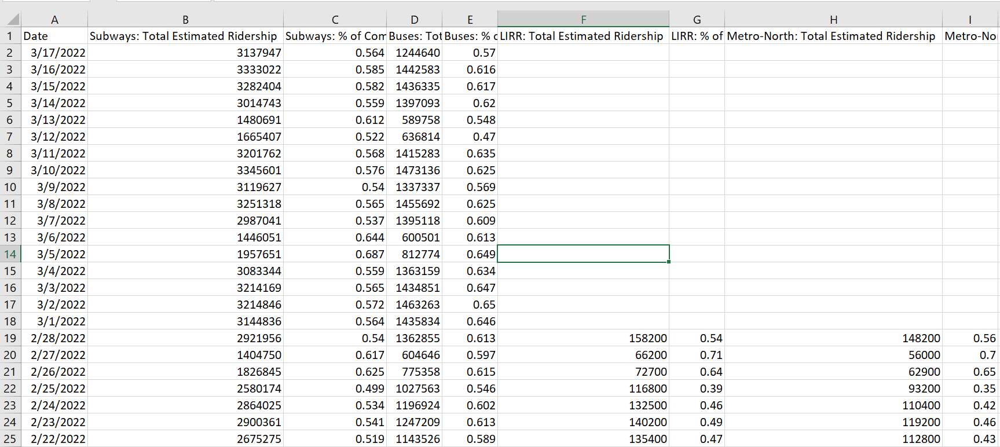
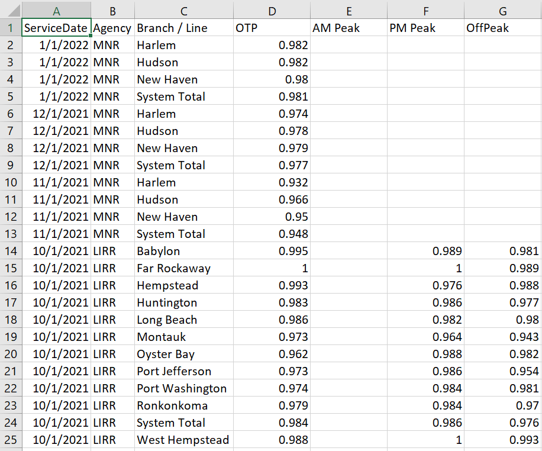
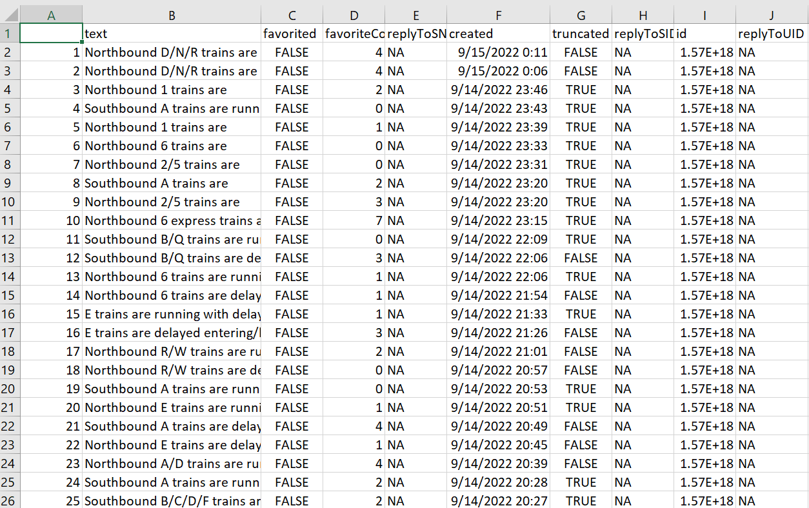

To analyze the efficacy of such a major transit system, a wide variety of data types must be analyzed. These include, but are not limited to, counts of events/trips, geospatial data of
stations and rail routes, text data and counts for public opinion/complaints, and indicators of station access/lack thereof. In order to gather a comprehensive and accurate picture of
the NYC rail transit system, numerous sources of data must be considered and utilized.
A large portion of the data for this project were gathered from the data sets provided by the NYC Metropolitan Transit Authority (MTA) through their Open Data Program. These data sets were
accessed either through direct downloading from data.world or through the use of the Socrata Open Data API (SODA). An API, or Application Programming Interface,
is a standardized and documented means of interacting with the computer systems of a given company/agency. In the case of this project, APIs enable more efficient and standardized data acquisition, and thus more
efficient data processing. Along with SODA, the Twitter API was used to acquire additional data not encompassed by the MTA's open data sets, which is covered more in depth in the sections below.
MTA System Daily Ridership Data
Central to analyzing the effectiveness of the various mediums of NYC rail public transportation is the overall system usage by transportation mode. The image to the right depicts
the first 25 rows of a data set compiled by the MTA that aggregates total daily ridership by mode of transport (e.g., subways, buses, LIRR, Metro North, etc.). Each day is considered an "observation",
and total estimated ridership numbers are aggregated in the columns. Each medium of transport has two dedicated columns, with the left being the total estimated ridership for a given
day, and the right side being a comparison of that day's ridership to a typical pre-pandemic day's worth of ridership. These data span from March 2020 to March 2022. Four columns of the
raw data set have been omitted in this image as they are not relevant to this analysis (they refer to Access-A-Ride and Bridge/Tunnel traffic), but the raw data may be downloaded by clicking
on the image to the right. The original source where this data set was downloaded can be found here.
|

|
MTA Fare Card Data
Most modes of local NYC public transportation can be accessed using the Metrocard, which is swiped when entering any subway station or boarding any bus. The MTA collects and aggregates
these swipes for each subway station each week, which are delineated by the type of Metrocard used, where full fare is the standard type. The image to the right shows the first 20 rows
of this data set, which contains almost 100,000 rows, spanning from January 2017 to August 2021. The raw data set from the MTA website (found below) contains data tracing back to 2010,
although these data were omitted as this analysis does not cover MTA data prior to 2017, primarily due to the availability of data that the MTA provides for other matters .
Numerous columns are omitted in this image due to space constraints, but these omitted columns are
simply more types of Metrocards, which, although less used than the pictured types of metrocards, will still be considered in this analysis. The full data set from which this image was generated
can be downloaded by clicking on the image. Each row represents a given week's aggregation of Metrocard swipes (i.e., station entries) at a particular station in the NYC Subway network. These
data were acquired through the use of the Socrata API, and the script used to extract these data can be found here and the original
source of the data can be found here
|

|
Customer Feedback Data
The MTA gathers customer feedback regarding number of complaints by transit type (e.g., subway, bus) and tabulates the total number of complaints and commendations received
regarding these varying transit mediums. The image of the dataset to the right contains the most recent three months worth of raw data that was acquired through the use of the MTA's Socrata API via Python.
These data span from October 2017 to June 2022, and cover numbers of complaints and commendations received by the MTA with regard to ridership by transit medium. The Access-A-Ride
rows will be disregarded in the analyses of this project. The complaint and commendation rates are the number of complaints/commendations per 100,000 rides of each respective
delineated subject matter. The Python code that extracts this data via the Socrata API can be downloaded here and the
original source of the data can be found here.
|

|
NYC Subway Geospatial Data
Additionally, the MTA records very specific location data on their subway stations, including specific latitude and longitude on each entrance and exit of every station on the network.
The image to the right displays the first twenty rows of this data set, although the columns that regard the specific latitudes and longitudes of individual entrances/exits are omitted
as they are not necessary to this analysis, although the full data set can be downloaded through the sources listed below or by clicking on the image to the right. In this analysis, the
overall geospatial location of the NYC subway stations will be used as well as the existence/lack thereof of disability access and staffing. The accessibility of these stations is incredibly
important when analyzing the overall effectiveness and suitability of the NYC subway system as a whole, although the specific geospatial data of each individual entrance and exit is not of use.
These data were extracted using the MTA's Socrata API using Python using code that can be downloaded here and the original
source of the data can be found here>
|

|
On Time Performance Data
When analyzing the performance of the various transportation mediums of NYC, it is necessary to analyze their punctuality, which is known as OTP, or on-time performance.
The MTA classifies this as "The percent of time that a train arrived at its final destination within 5 minutes and 59 seconds of its scheduled arrival time, per branch/line
or systemwide, and per time period."1
Essentially, the MTA is aggregating the on-time performance of Metro North and LIRR routes on a monthly basis, and stratifying by AM/PM Peak hours in specific scenarios. The
missing values in the image to the right are due to the fact that the MTA does not track OTP for AM/PM Peak hours for Metro-North, but does for the LIRR. These data span from
January 2015 to Januray 2022, although the Metro North data only spans from January 2019 to January 2022 and there is no LIRR data after October 2021. The original source from
which these data were downloaded can be found here, and the raw data set can also be downloaded by clicking on the image.
|

|
Delays and Service Reliability
The images to the right depict the head of data sets that are, respectively, MTA monthly aggregations of various incidents and delayed trains with regard to the Metro North (MNR) and LIRR.
In the data set to the left, which aggregates counts of various MTA-defined incidents, several types of incidents are tracked, such as average delays for late trains, number of "major incidents",
number of trains over 15 mins late, and more. These data span from January 2015 to January 2022. The original source for this data set can be found here.
The second data set is purely an aggregation of reasons for delays by month across the entire MTA rail system (subway, MNR, LIRR, etc.).
The original source from which these data were downloaded can be found here.
|
|
NYCT Subway Twitter Data
The MTA operates a Twitter account under the name @NYCTSubway. The vast majority
of tweets on this account involve notifying customers of active and upcoming delays/service disruptions. However, the MTA does not appear to have a single data set that tracks
specific instances of delays and service disruptions on the subway, thus their Twitter account is a reliable means as to ascertain the nature and frequency of delays throughout the
NYC Subway system. The image to the right depicts the first several rows of 1017 tweets extracted from the NYCTSubway account in the past two weeks, encompassing all tweets posted
by this account. These data were acquired through the use of the Twitter API and R (via the twitteR package), and thus is time limited, meaning the Twitter API does not allow for
searches of older tweets. Ultimately, this means these data are limited to recent occurrences which are still useful to this analysis. The R script used to access the Twitter API and
extract the relevant tweets can be downloaded here and the resulting data frame can be downloaded by clicking on the
image on the right.
|

|